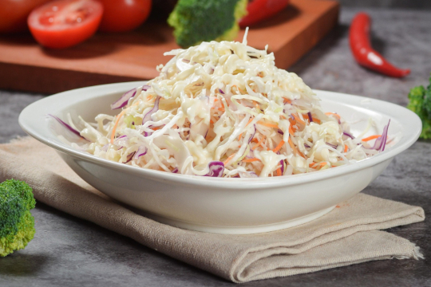
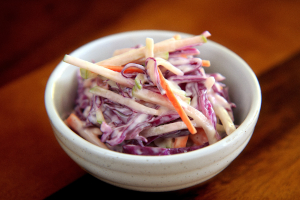
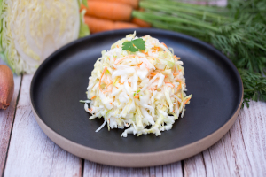
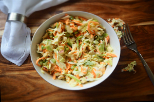

Ensalada poke de atún
Ingredientes
- 1/2 col (repollo) blanca
- 1 zanahoria
- 1/2 cebolla (opcional)
- 3 cucharadas de mayonesa
- 1 cucharada de vinagre
- 1 cucharadita de azúcar
- Sal al gusto
- Pimienta al gusto
Preparación
La ensalada de col es un acompañamiento clásico, fresco y crujiente, muy popular en barbacoas y platos principales. Su combinación de verduras y salsa cremosa la hace sencilla y deliciosa.
Para prepararla, comienza cortando la col en tiras finas y rallando la zanahoria. Si lo deseas, añade también cebolla cortada en juliana para darle un toque más intenso de sabor.
En un bol aparte, mezcla la mayonesa, el vinagre, el azúcar, la sal y la pimienta hasta obtener una salsa homogénea. Incorpora las verduras y mezcla bien hasta que queden completamente cubiertas.
Deja reposar la ensalada en la nevera durante al menos 30 minutos antes de servir, para que los sabores se integren y la textura sea aún más agradable.


